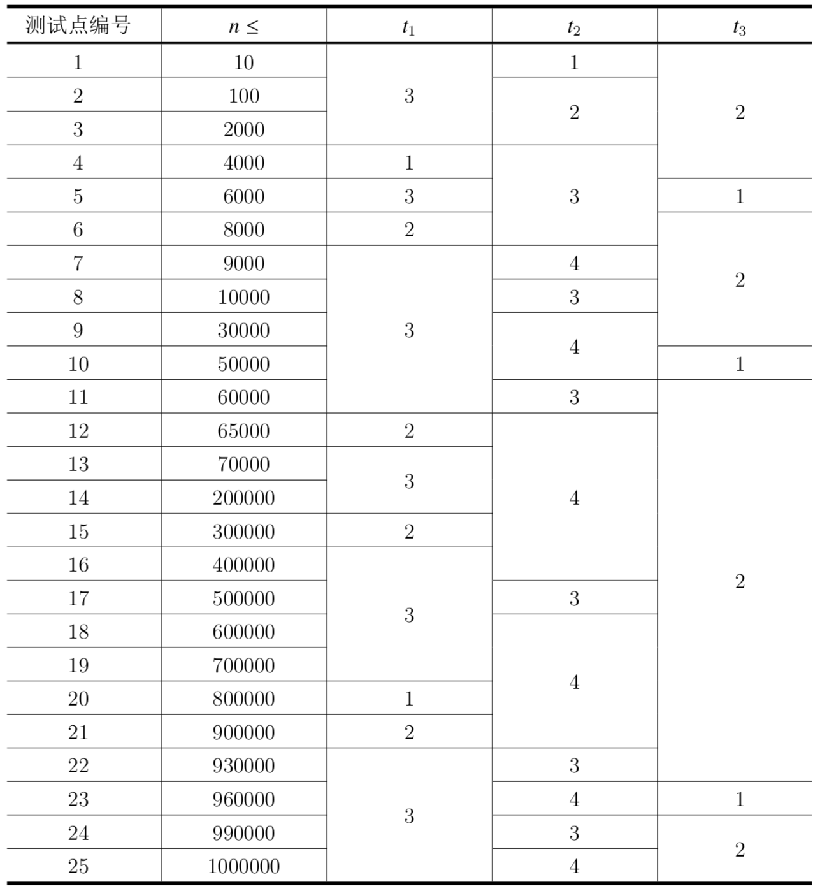

在人类智慧的山巅，有着一台字长为1048576位的超级计算机，著名理论计算机科学家P博士正用它进行各种研究。不幸的是，这天台风切断了电力系统，超级计算机无法工作，而P博士明天就要交实验结果了，只好求助于学过OI的你……
P博士将他的计算任务抽象为对一个整数的操作。具体来说，有一个整数x，一开始为0。接下来有n个操作，每个操作都是以下两种类型中的一种：
保证在任何时候，$x≥0$。
输入的第一行包含四个正整数$n,t_1,t_2,t_3$，$n$的含义见题目描述，$t_1,t_2,t_3$的具体含义见子任务。
接下来$n$行，每行给出一个操作，具体格式和含义见题目描述。
同一行输入的相邻两个元素之间，用恰好一个空格隔开。
对于每个询问操作，输出一行，表示该询问的答案（0或1）。对于加法操作，没有任何输出。
10 3 1 2 1 100 0 1 2333 0 1 -233 0 2 5 2 7 2 15 1 5 15 2 15 1 -1 12 2 15
0 1 0 1 0
【样例1解释】
样例中有10个操作：第1个为将x加上$100×2^0$，操作后，x=100；第2个为将x加上$2333×2^0$，操作后，x=2433；第3个为将x加上$−233×2^0$，操作后，x=2200；第4个为询问x位权为$2^5$的位上的值，x在二进制下为100010011000，答案为0；第5个为询问x位权为$2^7$的位上的值，x在二进制下为100010011000，答案为1；第6个为询问x位权为$2^{15}$的位上的值，x在二进制下为100010011000，答案为0；第7个为将x加上$5×2^{15}=163840$，操作后，x=166040；第8个为询问x位权为$2^{15}$的位上的值，x在二进制下为101000100010011000，答案为1；第9个为将x加上$−1×2^{12}=−4096$，操作后，x=161944；第10个为询问x位权为$2^{15}$的位上的值，x在二进制下为100111100010011000，答案为0。
【子任务】
在所有测试点中，$1≤t_1≤3,1≤t_2≤4,1≤t_3≤2$。不同的$t_1,t_2,t_3$对应的特殊限制如下:
各个测试点的数据范围如下：

 Comet OJ
Comet OJ